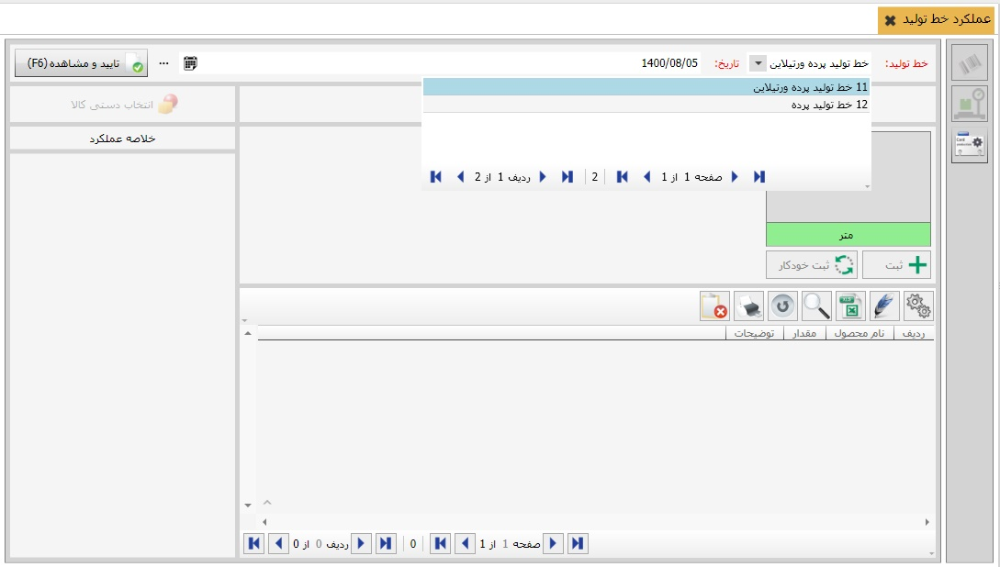
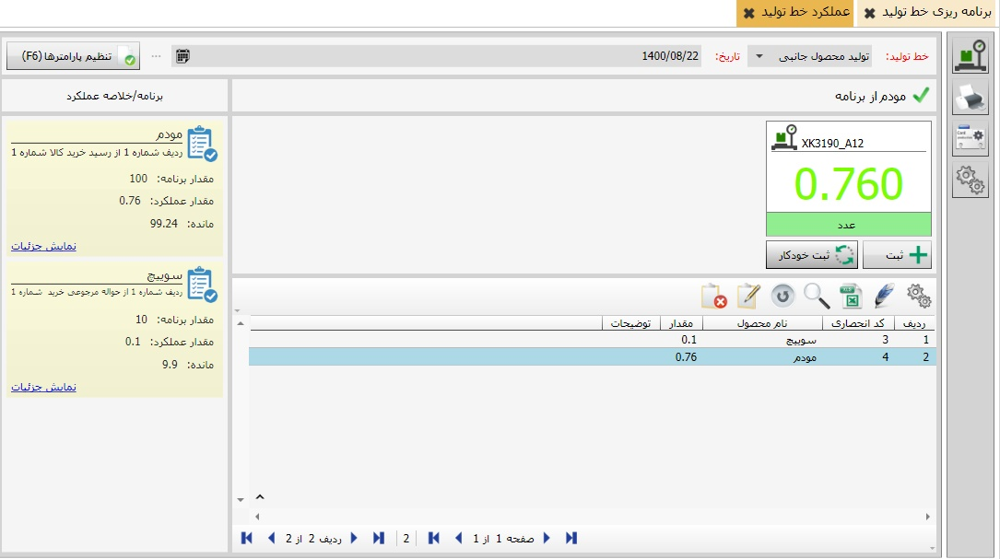
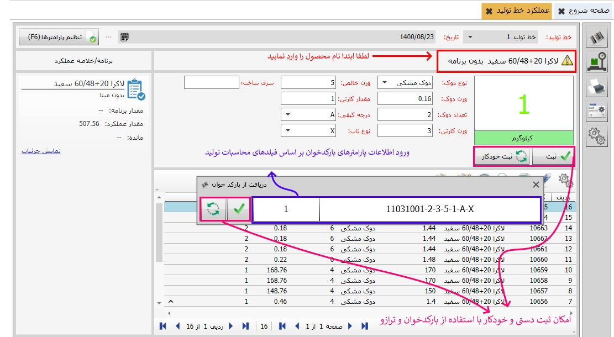

برای بررسی عملکرد خط تولید، لطفا «عملکرد خط تولید» را کلیک نمایید. پس از نمایش صفحه محاسبات نمایش داده می شود.برای مشاهده عملکرد خط تولید لطفن خط تولید موردنظرتان را انتخاب نمایید و سپس دکمه «تایید و مشاهده» را کلیک کنید. اکنون گزینه ترازو و بارکدخوان نیز برای شما فعال و قابل نمایش می گردند.


اکنون از طریق «برنامه ریزی خط تولید» که پیشتر به آن نیز اشاره شده است، می توانید محاسبات محصولات خود را بر اساس خطوط تولید از پیش تعریف شده، اعمال نمایید. پس از محاسبه وزن کالا، شما می توانید، آن را از طریق دستگاه ثبت و مشاهده نمایید.
لازم به توضیح است که 1.پس از ثبت محاسبات، می توان،میزان وزن جعبه، وزن محصول و محاسبات آن نیز وجود دارد. 2.همانطور که پیشتر نیز توضیح داده شد، امکان ثبت و ایجاد برچسب بارکد محصولات در این فرم همزمان قابل اجرا می باشد. 3.در صورتی که تمایل به ثبت دستی محاسبات دارید، این امکان برای شما مهیا گردیده است. 4.آخرین محصول یا کالای ثبت شده، بر اساس شماره ردیف قابل نمایش ، ویراش و حذف می باشد 5.در صورتی که کالای ثبت شده در بارکدخوان با کالای انتخاب شده در ترازو یکسان نباشد، امکان ثبت محصول به وسیله بارکدخوان وجود ندارد. 6.امکان ثبت پارامترها از طریق دستگاله بارکدخوان، بر اساس فیلدهای اطلاعاتی ترازو نیز مقدور می باشد. همانگونه که در تصویر ذیل مشاهده می کنید. 